Grid and Panel layout
The primary containers in FlexDash to lay out widgets are grids and panels. Both place a linear list of widgets into a two dimensional grid from top-left to bottom-right and both support widgets that span multiple rows or multiple columns. The main difference between grids and panels is that grids reflow widgets as the browser screen width changes while panels maintain a fixed layout of widgets.
Grids
Grids display a two-dimensional grid of widgets where all columns have the same width and all rows have the same height. The column width is a minimum of 120px and there is an 8px gap between columns. The column width stretches so an integral number fills the width of the browser window, this means that the maximum theoretical column width is 247px (a very narrow window showing a single column before the jump the two columns). The height of the grid rows is fixed at 78px (a 3/2 width/height aspect ratio) with an 8px gap.
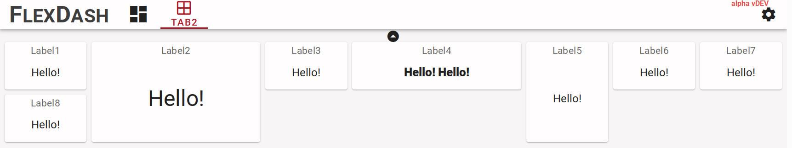
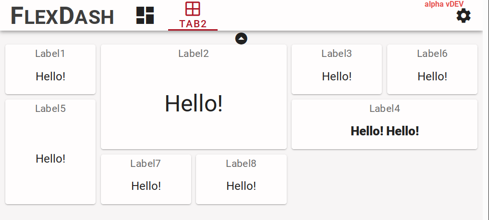
The reflowing of the grid can be constrained by specifying a minimum number of columns as well as a maximum. The max constraint can avoid awkward wide layouts on very wide displays and the min constraint can be helpful for mobile device layout to avoid excessively narrow layouts, possibly forcing the user to either pan or hold the device in landscape orientation.
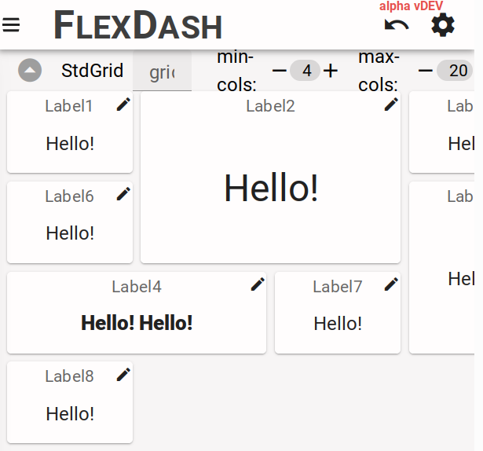
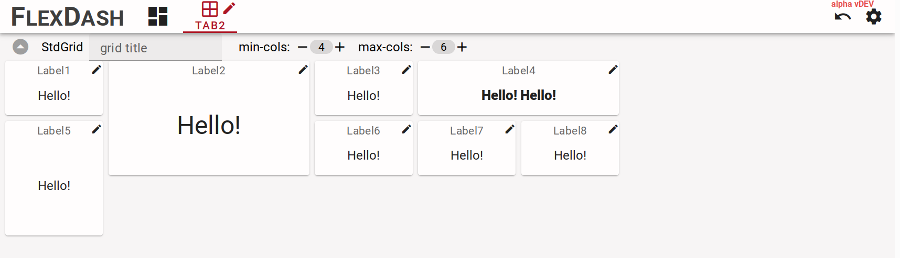
Overall the grid provides a "responsive" layout that reflows as needed on smaller displays yet uses the full width on larger ones. One constraint is that the grid always has at least as many columns as the widest widget. So if a grid has a 6-column wide widget that is the grid's narrowest configuration and may well be wider than a cell phone display, for example. The non-intuitive part here is that it's not just the wide widget that will exceed the width of the screen but the grid as a whole and thus other small widgets will be off-screen too (to-do item: figure out horizontal scrolling).
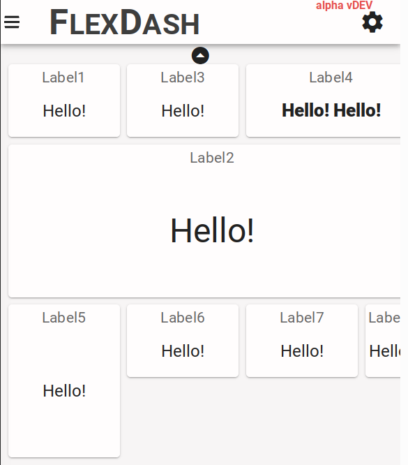
Panels
Panels also display a two dimensional grid but the number of columns is fixed and are of half the size of grid columns. Panels are placed into a grid just like widgets (from the grid's point of view a panel is a widget) thus they span a fixed number of grid columns and rows. A panel then has twice the number of columns for its internal grid and an arbitrary number of rows. The columns are generally equal-width and the rows are minuimal-height with extra space equally distributed.
The background of a panel can be either solid or transparent. A transparent background gives the look of a number of widgets that are grouped together while a solid background eliminates boundaries between widgets and makes the panel look like a larger compound widget.
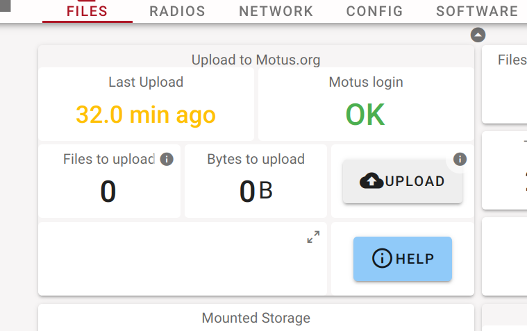
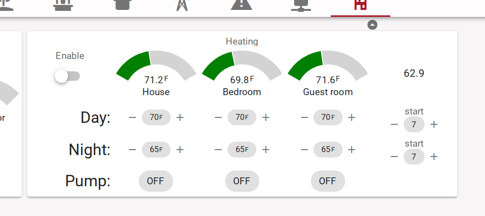
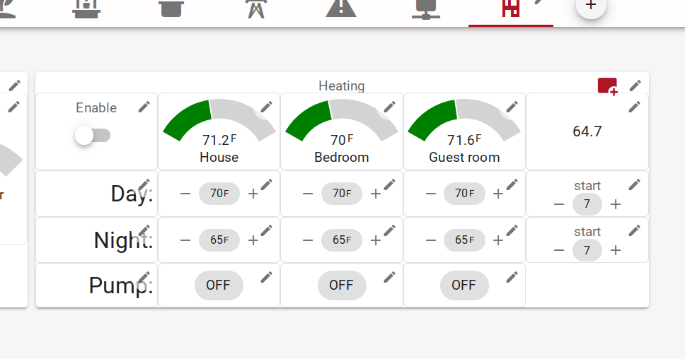
Tips and tricks
Creating compound widgets
An example of a compound widget is shown ine the figure above. Some of the tricks used are:
- label widgets are useful to place text because they provide control over font size and text alignment, e.g. the "Day:", "Night:" labels
- stat widgets without title are useful to display set points and other control values
- use buttons with icons to implement actions
Creating mobile layouts
Narrow cell phone screens are approx 3 grid columns wide, setting min-cols on a grid to 3 forces this even on phones that show a smidge under 3 columns.
Grouping widgets into panels that are 3 cols wide creates a type of card layout that works well both on narrow phone screens as well as "normal" desktop screens, setting max-cols to 6 or 9 avoids awkward super-wide layouts.
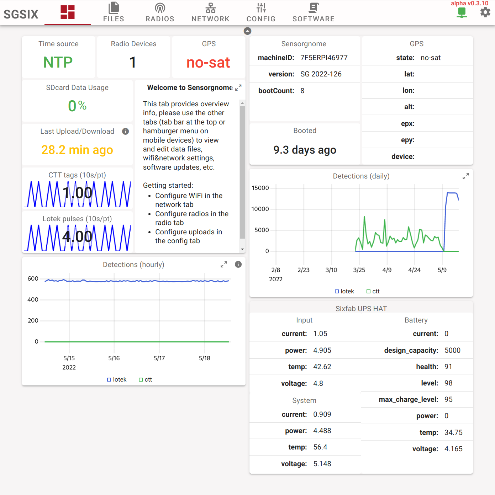
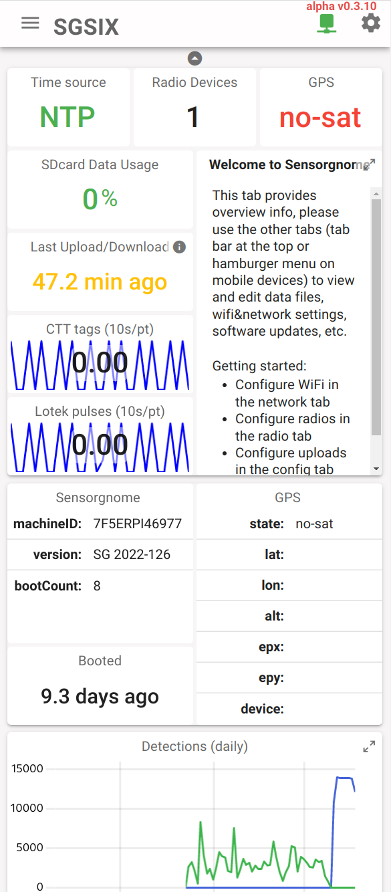
Many widgets can be maximized, thus a graph can be presented in a relatively small widget and the user can maximize it to view the details, the same applies to the markdown widget and others.
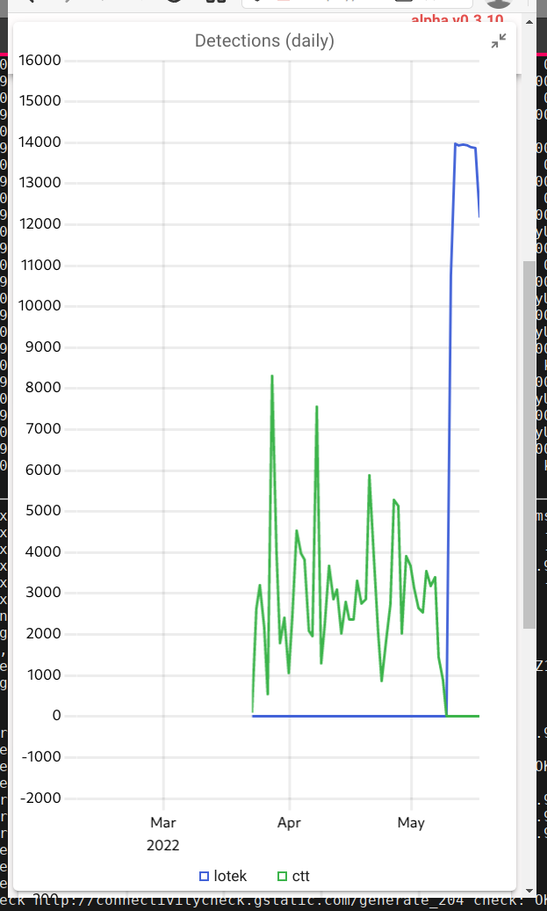